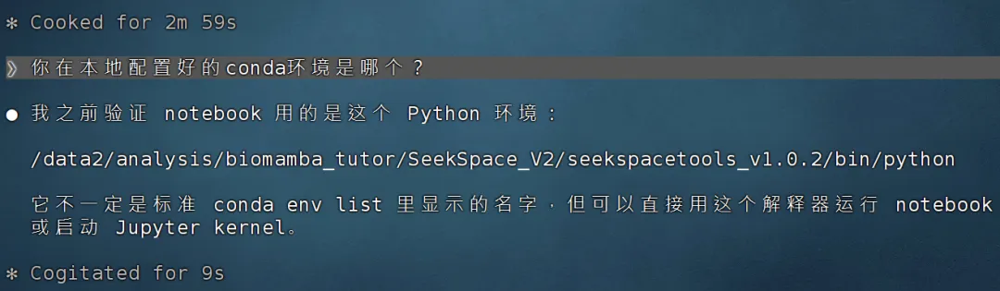
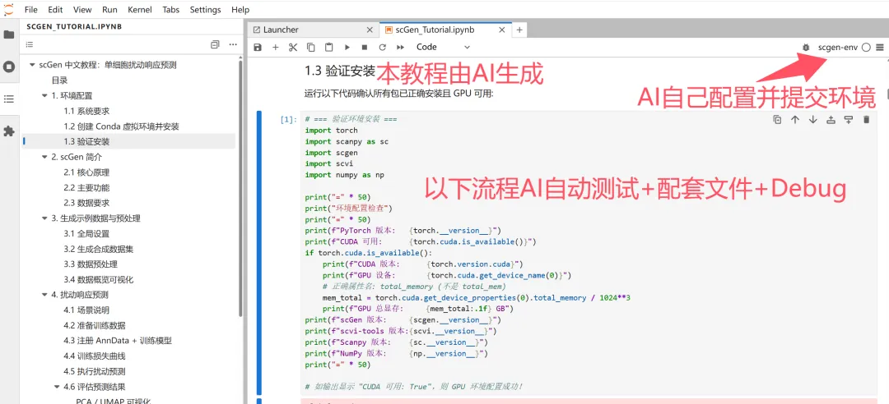
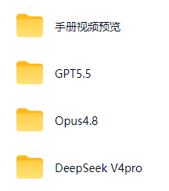
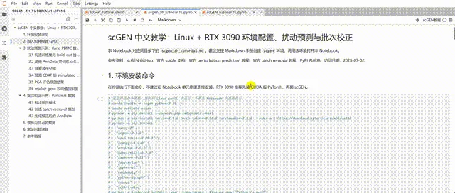
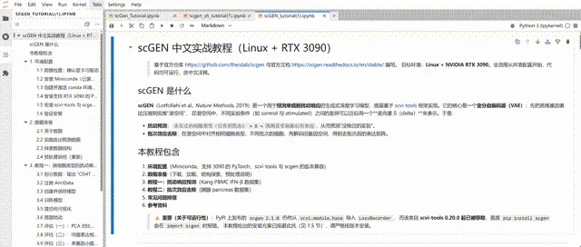
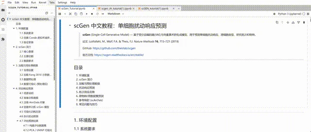
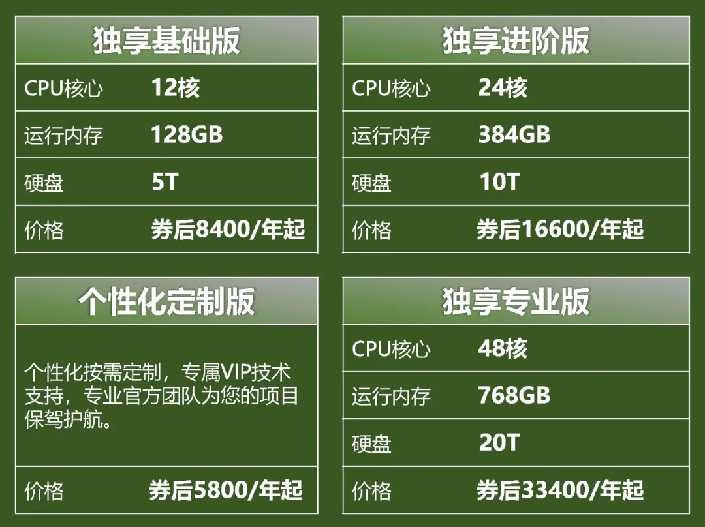
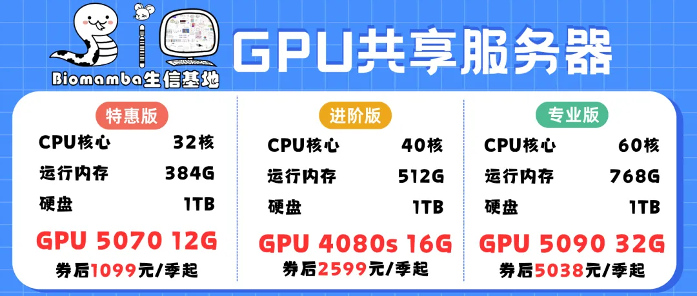

Biomamba也离下岗不远了，直接让Claude帮我配置环境并制作教程
原文：https://mp.weixin.qq.com/s?__biz=MzAwMzIzOTk5OQ==&mid=2247539308&idx=1&sn=c1b2915aac125f4fa31bd50ffb8b98b9&chksm=9b3c233cac4baa2a7f092d46cbc237d0e4f1ccd4481d469a21fdbafcb23e23f33cc2e4f573fd#rd 合集：AI时代，不用就会被淘汰

一、写在前面
openClaw、Claude Code、Codex算是彻底改变了生信时代，我们之前也直接让claude code帮我复现单细胞文章。众所周知，我们课程与教程开发的过程其实就是一部踩坑实录史。如果说AI Agent能够直接帮我部署好服务器环境解决好软件bug、把测试数据与流程跑通，那简直可太可以让我下岗了。比如我们此前做过，风靡一时的scTenifoldKnk单细胞虚拟基因敲除,准不准?。，现在可以直接让AI做一个姊妹篇：虚拟干扰scGen教程。
如果你的计算机不足以支持大规模的计算，且不希望花太多￥在买电脑上，可按需选用适合自己的计算资源：共享(经济实惠)：足够支持你完成硕博生涯的共享服务器独享(省电省心)：如何拥有一台服务器，且不用自己搭建维护
访问链接：https://biomamba.xiyoucloud.net/
更多内容可咨询客服微信[Biomamba_zhushou]
二、让AI干活
配置过程可见：试试D老师的单细胞代码分析能力怎么样(代部署可联系客服微信[Biomamba_zhushou])。
我的提示词为：
*
https://github.com/theislab/scgen这个是scGEN的链接，https://scgen.readthedocs.io/en/stable/这是官方的教学文档，参考这两文档编写一个中文的scGEN的教学，教学从配置环境开始，我的系统是linux显卡是3090,以ipynb的形式和md文件两个交付结果，给我能运行的教程手册，整个流程需要结构清晰，代码拥有注释。
当然，有时候实测结果也会有点问题，比如测试流程时并没有在我已有的conda环境里操作，而不是新建一个纯净的conda环境。教程中的测试数据也是模拟的数据，而非真实数据，看来需要Skills规范一下。

最终，我们测试了3种模型，包括GPT5.5、Opus4.8、DeepSeek V4 Pro，给大家保存好了jupyter文件，AI Agent甚至能把测试的环境也给我提交到jupyterhub当中。实际测试过程中也遇到一些问题，例如字体不能正常显示的时候AI没法敏锐的察觉到并解决这个问题，还是需要进一步的交互。在修改新的一版文档时有可能会继承上一版的其它bug，或者忘记了你之前交代过的其它前提或SKILLS。不过总体上还是节省了很多时间，尤其是省去了疯狂检索怎么解决安装依赖关系这个环节。
三、手册与文件
通过网盘分享的文件：
链接: https://pan.baidu.com/s/19ay9wAAB22FfigZUjSz-gw
提取码:请联系客服微信[Biomamba_zhushou]领取

大家可以预览一下生成的手册，GPT 5.5生成的比较简短GPT5.5：
Opus 4.8：
DeepSeek V4 pro
四、生信新时代
所以理论上来说Claude+西柚云服务器+几块钱的DS tocken就足够测通任何开源的流程(需要代部署可以滴滴微信[Biomamba_zhushou])。另外需要可接入AI的超强性价比服务器？可参考：访问链接：https://biomamba.xiyoucloud.net/
RTX5090、4080S、5070显卡上机
 

如何联系我们

 留一个领取资料、开箱即用的单细胞分析镜像的微信号[Biomamba_zhushou]，方便各位随时交流。同时我们也构建了交流群矩阵，欢迎大家入群讨论。
大家可以阅读完这几篇之后添加给生信入门初学者的小贴士
如何搜索公众号过往发布内容
留一个领取资料、开箱即用的单细胞分析镜像的微信号[Biomamba_zhushou]，方便各位随时交流。同时我们也构建了交流群矩阵，欢迎大家入群讨论。
大家可以阅读完这几篇之后添加给生信入门初学者的小贴士
如何搜索公众号过往发布内容
已有生信基地联系方式的同学无需重复添加

 您点的每个赞和在看，我都认真当成了喜欢
您点的每个赞和在看，我都认真当成了喜欢